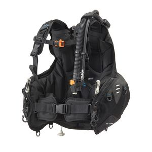
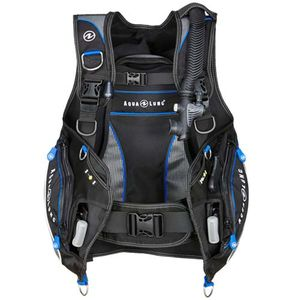
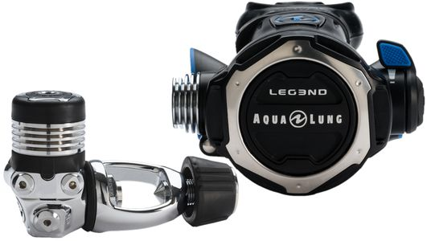
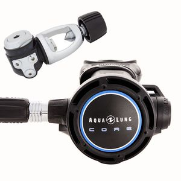

浮力背心

XDEEP Zen / Zen Ultralight
店內價：25,000
穩固的背板，未來玩技潛也無負擔
氣囊外罩拉鍊可打開，便於更換內部的氣囊
多款顏色供選擇，適合想與眾不同者
可以根據需求，另購其他的附件進行靈活組合進行個性化配置
氣囊外罩拉鍊可打開，便於更換內部的氣囊
多款顏色供選擇，適合想與眾不同者
可以根據需求，另購其他的附件進行靈活組合進行個性化配置
Halcyon adventurer plus
店內價：37,500
碳纖維背板，輕量化設計讓旅遊也輕鬆
快速調整設計，讓你更換防寒衣也可迅速調整背帶
全客製化配色，獨一無二是你的代名詞
快速調整設計，讓你更換防寒衣也可迅速調整背帶
全客製化配色，獨一無二是你的代名詞

TUSA BCJ-1800
店內價：15,500
輕量化及品質的旅行 BC省去出國行李超重煩惱
厚且軟的背墊兼顧輕盈舒適合身感
兩條氣瓶固定帶,氣瓶不易鬆脫
厚且軟的背墊兼顧輕盈舒適合身感
兩條氣瓶固定帶,氣瓶不易鬆脫

Aqua Lung PRO HD
店內價：16,650
5個金屬D環符合水攝潛水員需求
快速拆卸及可調整肩扣
整合式配重帶
BC內部背架配備有提把，方便潛水員穿脫
BC兩側配備有管線收納口袋防止管線糾纏增加潛水安全
快速拆卸及可調整肩扣
整合式配重帶
BC內部背架配備有提把，方便潛水員穿脫
BC兩側配備有管線收納口袋防止管線糾纏增加潛水安全
調節器
ATOMIC B2
店內價：22,500
舒適、性能、流行時尚的絕佳組合
鍍鉻銅一級頭以及鈦合金二級頭
獨家研發舒適萬向接頭
自動氣流控制(AFC)
鍍鉻銅一級頭以及鈦合金二級頭
獨家研發舒適萬向接頭
自動氣流控制(AFC)

AQUA LUNG LEG3END
店內價：22,600
全新設計的真空吸力撥桿
自動關閉裝置(ACD)
超平衡式橫膈膜
新設計前蓋有效降低呼吸阻抗
自動關閉裝置(ACD)
超平衡式橫膈膜
新設計前蓋有效降低呼吸阻抗

AQUA LUNG CORE
店內價：17,040
自動關閉裝置(ACD)
T型簡捷一級頭設計配置有4個中壓出口與2個高壓出口
Aqua Lung其它型號調節器零件共通方便日後維修
T型簡捷一級頭設計配置有4個中壓出口與2個高壓出口
Aqua Lung其它型號調節器零件共通方便日後維修
Mares Dual ADJ 52X
店內價：19,800
備用氣源

ATOMIC SS1
店內價：8,700
整合充排氣閥與備用氣源讓兩種產品合而為一，減少了潛水裝備的體積與重量
需要共用氣源的緊急狀況下，也能輕易地找到它
SS1可適用於任何BC，不至於發生所謂的排他性
SS1特殊設計讓中壓管與蛇管都能快速卸取保護心愛的備用二級頭
需要共用氣源的緊急狀況下，也能輕易地找到它
SS1可適用於任何BC，不至於發生所謂的排他性
SS1特殊設計讓中壓管與蛇管都能快速卸取保護心愛的備用二級頭
錶組

AQUA LUNG 兩用錶（指北針、壓力錶）
店內價：5,320
搭配手腕式電腦錶的最佳選擇
刻度盤面採最新儲光塗層，方便於昏暗環境中判讀儀錶
儲光式儀表面板，照明效果與照明時間皆較傳統螢光高出數倍
刻度盤面採最新儲光塗層，方便於昏暗環境中判讀儀錶
儲光式儀表面板，照明效果與照明時間皆較傳統螢光高出數倍
電腦錶
Atmos Mission One
店內價：12,825
內建體感震動及訊息警報系統
GPS潛點紀錄與引導 (水面使用)
手機訊息與來電接收
1.2吋高解析彩色螢幕
充電式電腦錶，半小時可充80%
韌體可自行更新
GPS潛點紀錄與引導 (水面使用)
手機訊息與來電接收
1.2吋高解析彩色螢幕
充電式電腦錶，半小時可充80%
韌體可自行更新
SUUNTO D5
店內價：22,500
全彩LED顯示螢幕
震動及聲響警示
3D數位指北針
支援SUUNTO Tank POD無限發射器
充電式電池
可自行更新韌體
震動及聲響警示
3D數位指北針
支援SUUNTO Tank POD無限發射器
充電式電池
可自行更新韌體
Shearwater Peregrine
店內價：14,500
全彩LCD顯示螢幕
用戶自定義顯示
無線充電
支援多種語言
簡單易讀取的潛水計畫功能
用戶自定義顯示
無線充電
支援多種語言
簡單易讀取的潛水計畫功能
Shearwater AI
店內價：27,500
電子指北針
可自行更換3號電池
可支援1000小時潛水紀錄
透過藍芽可下載潛水紀錄及更新電腦錶軟體
支援開放及密閉系統，在潛水過程中可切換 開放及密閉系統，各支持5種不同氣體潛水過程中可切換氣體
可自行更換3號電池
可支援1000小時潛水紀錄
透過藍芽可下載潛水紀錄及更新電腦錶軟體
支援開放及密閉系統，在潛水過程中可切換 開放及密閉系統，各支持5種不同氣體潛水過程中可切換氣體